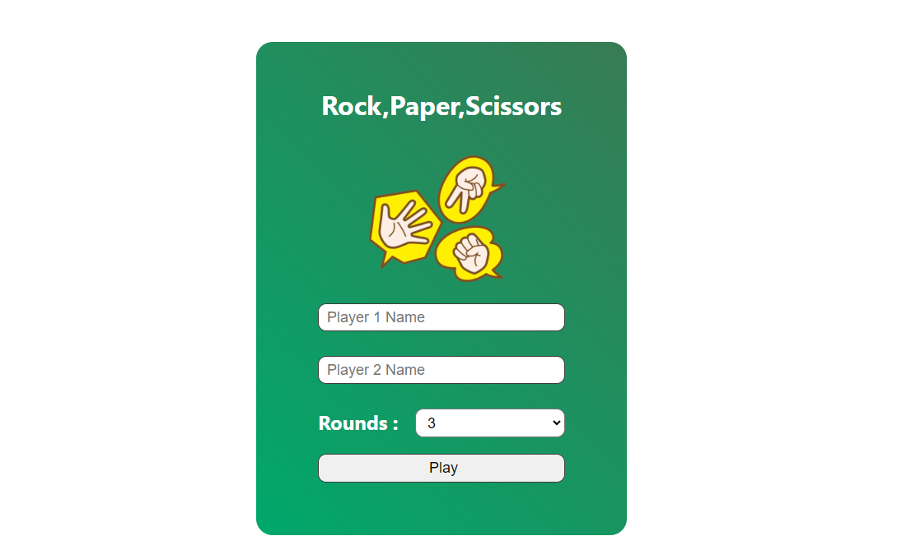
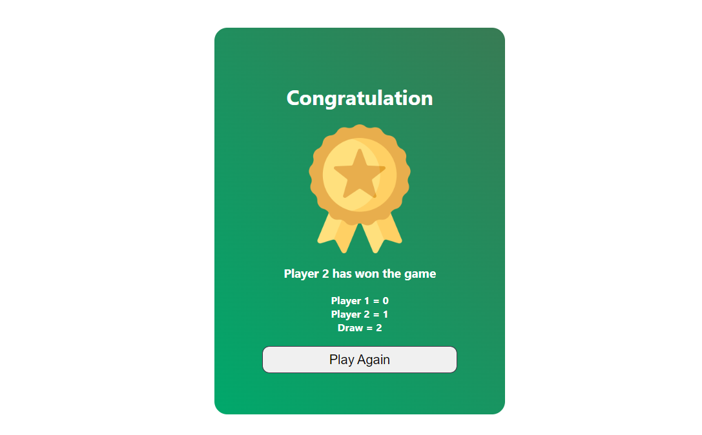

+923073073104

Home
Rock, Paper, Scissors Game Using JavaScript
I've made a game called Rock, Paper, Scissors where two players can compete against one another. The traditional rules of this interactive game apply: players select from rock, paper, or scissors, and the outcome of their selections determines the winner. Both players will have a pleasant and interesting experience thanks to the user-friendly and intuitive game interface. Try it out and experience the thrill of this classic game!
Dashboard
I created a dashboard for the game that has two text fields, a drop-down menu to choose how many rounds there are, and a play button. Players can personalize their game experience by entering pertinent data, like player names and the preferred number of rounds, on this dashboard.
After everything is set up, just press the play button to start the game and have fun competing! The design is simple and easy to use, giving gamers a smooth gaming experience.

Game Start View
The game changes to a new layout when the play button is pressed, displaying the names of the players, their scores, draw counts, and the decisions they have made. Images of rocks, paper, or scissors that match to each player's selections are used to symbolize their input (keys A, S, and D for Player 1 and 4, 5, and 6 for Player 2).
Players may monitor their performance and take advantage of the interactive gameplay experience thanks to this arrangement, which provides a clear visual depiction of the game's progress.

Result
After the rounds, a results screen will appear with the name of the winner and a lovely trophy icon. Players will be able to see their performance by seeing their respective scores. Furthermore, there will be a "Play Again" option that allows you to resume the game and have more fun with Rock, Paper, Scissors! This last screen offers a gratifying way to end the game, showcasing the winner and allowing players to keep playing if they so choose.
